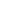

Surakarta, December 2, 1994
+62 822 2045 4652
hani.husam@gmail.com
Yogyakarta, Indonesia
Skills
- HTML and CSS
- Scripting language: Javascript, Typescript, Python, Java
- Framework/Library: Django, React, Next, Bootstrap, TailwindCSS, etc
- Understanding UI Design; Visual Hierarchy, Design System, etc
Honor & Award
Best Graduated
2019
Included in one of the award recipients of the best graduate students in the IV graduation period of UPN “Veteran” Yogyakarta
Hobbies & Interest
- Apple device
- Movie
- Book
Links and Credentials

Linkedin
Dribbble
Website
Github